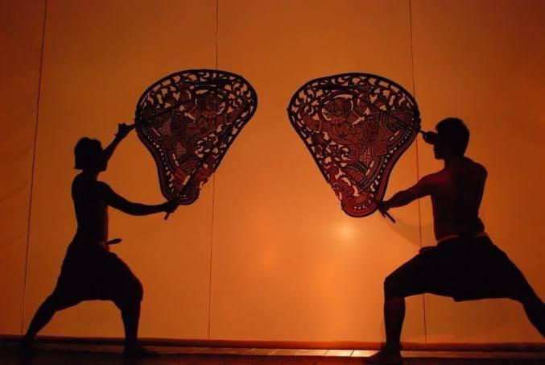
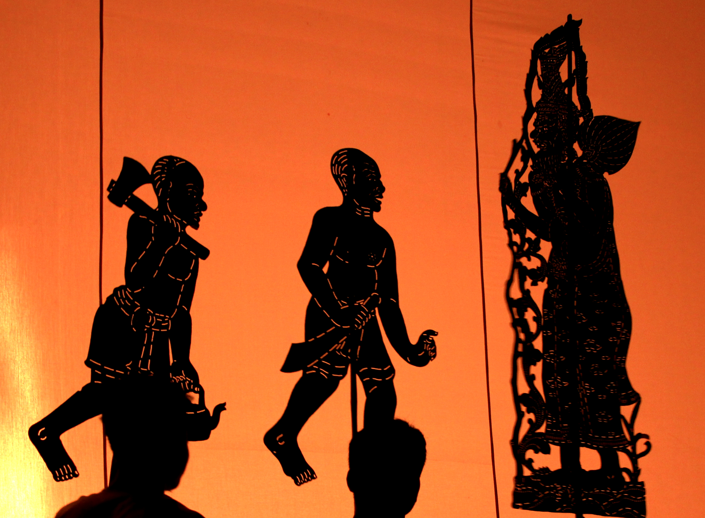
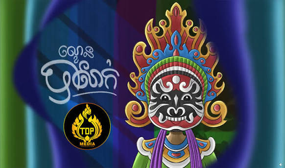

ប្រភេទល្ខោបុរាណខ្មែរ

ល្ខោនខោល
ល្ខោនខោល ត្រូវបានកត់ត្រាដោយលោក ហេនរី មូហត ក្នុងពិធីពិសារភោជនីយអាហារ ជាមួយនិងទស្សនីយភាព ល្ខោនខោល ក្នុងរាជដំណាក់ព្រះបរមរាជវាំង នាក្រុងឧដុង្គ ជាមួយព្រះបាទ អង្គដួង ក្នុងឆ្នាំ 1858 ដែលរៀបរាប់ពីកំណត់ហេតុរបស់លោក ជាមួយនិងទស្សនីយភាព របាំក្បាច់បុរាណរបស់កម្ពុជា ដែលបានបែងចែកជារបាំពីរដែលមានទម្រង់ប្រហាក់ហែលគ្នា មួយជារបាំក្បាច់បុរាណ ដែលសម្ដែងដោយមនុស្សស្រីសុទ្ធ មួយជារបាំពាក់របាំងមុខ ដែលកើតមានក្នុងរាជព្រះបាទអង្គដួង ។ ក្រោយពេលព្រះបាទ អង្គដួងបានសោយព្រះទីវង្គត ប្រទេសថៃមានឥទ្ធិពលកងទ័ពយ៉ាងខ្លាំងមកលើកម្ពុជា បានចូលមកកាត់យក បាត់ដំបង សៀមរាប សុីសុផុន ពីកម្ពុជាក្នុងឆ្នាំ 1867 ហើយបានប្រមូលយកឯកសារ របាំ និងទម្រង់សិល្បៈល្ខោនខោលជាច្រើនពីប្រទេសកម្ពុជា ក្រោយមានកិច្ចការពារ ពីអណាព្យាបាលបារាំងមកលើប្រទេសកម្ពុជា បានកើតមានសង្គ្រាមបារាំង-សៀមកើតឡើង ក្នុងឆ្នាំ 1893 ដែលមានរយៈពេលដល់ ៦ខែ ទើបខាងបារាំងឈ្នះសង្គ្រាមនេះបង្ខំឱ្យសៀមប្រគល់ខេត្ត បាត់ដំបង សៀមរាប សុីសុផុន មកឱ្យកម្ពុជាវិញឆ្នាំ (1904-1907) នៃគ.សករាជ ។ ល្ខោនខោលបានលិចឡើងម្ដងទៀត នាដើមស.វទី២០ ក្នុងរាជព្រះបាទ ស៊ីសុវត្ថិ នៃកម្ពុជា សម័យកាលកម្ពុជាក្រោមអាណាព្យាបាលបារាំង ល្ខោនខោល តែងត្រូវបានយកមកសម្ដែងជាញឹកញាប់ក្នុងព្រះបរមរាជវាំង ក្នុងបរិវេណ ព្រះវិហារព្រះកែវមរកត ដើម្បីឲ្យក្រុមការទូត ឬ ក្រុមប្រវត្តិវិទូបារាំងបានទស្សនា ដើម្បីជាកិច្ចគួរសមក្នុងទំនាក់ទំនងការទូត មិត្តភាព កម្ពុជា-បារាំង ក្នុងនោះមាន ប្រវត្តិវិទូបារាំងម្នាក់ លោក ហ្សក ហ្គ្រូលីយេរ ដោយការស្រលាញ់ របាំក្បាច់បុរាណរបស់កម្ពុជា លោកបានចងក្រងជាសៀវភៅកំណត់ត្រា អំពីរបាំក្បាច់បុរាណរបស់កម្ពុជាមានចំណងជើងថា "Danseuses cambodgiennes, anciennes & modernes" ឆ្នាំ ១៩១៣ ។
ល្ខោនខោលស្បែកធំ
ល្ខោនស្បែកធំ ឬ ល្ខោនស្រមោលស្បែកធំ គឺជាល្ខោនដែលមានវ័យចំណាស់បំផុត នៅក្នុងប្រទេសកម្ពុជា ដែលអាចជាសំណល់ ពីសម័យបុរាណ ហាក់បីដូចនៅតាមសិលាចារឹកតាមប្រាសាទ។ ល្ខោនស្រមោលស្បែកធំមានដើមកំណើត ប្រហែលកើតឡើងមុនសម័យអង្គរ ដោយសារយោងតាមសិលាចារឹកលេខ K.១៥៥ នៅគោករកា នៅក្នុងសតវត្សរ៍ទី៩។ វាគឺជាសិល្បៈសំរាប់បូជា ហើយ ដាច់ដោយឡែកពី កាព្យរាមកេរ្តិ៍ ដោយវាមានតុក្កតាស្បែកធំបង្ហាញលើផ្ទាំងក្រណាត់ផ្ទៃសនូវ ស្រមោល។ ឆ្នាំ១៩៦៨ ក្រុមល្ខោនស្បែកធំបានបង្កើតក្រុមរបាំបុរាណ ហើយបន្ទាប់មក ក៍ក្លាយជានាយកដ្ឋានវិចិត្រសិល្បៈ។ បន្ទាប់ពីឆ្នាំ១៩៧៩ សិល្បករដែលសេសសល់ ពីសម័យប៉ុលពត បានប្រមូលតុក្កតាស្បែកពីគ្រប់ទីកន្លែង ក្នុងប្រទេសដើម្បីបន្តការសម្តែងក្នុង ឆ្នាំ១៩៩១ រដ្ឋាភិបាលបារាំង បានផ្តល់ជំនួយនូវផ្ទៃស្រមោលដ៍ធំមួយទៅសាស្ត្រាចារ្យ ពេជ្រ ទុំក្រវិល ដែលជាអ្នកដកស្រង់និងតែងនិពន្ធរបាំពីរឿងរាមកេរ្តិ៍ គឺ ចំបាំងព្រះឥន្ទនិងចំបាំង សនាគកាបាស់។ ក្រសួងវប្បធម៌ និង អង្គការក្រៅរដ្ឋាភិបាលយ៉ូណេស្កូ ផ្តល់ស្បែកធំមួយឈុត ទៅឱ្យសាស្ត្រាចារ្យ ហង្ស សុត បញ្ជូនទៅកាន់ក្រុមសិល្បករខេត្តបន្ទាយមានជ័យ។ បច្ចុប្បន្ន មានតុក្កតាស្រមោលប្រាំ សម្រាប់ក្នុងប្រទេសគឺ ពីរឈុតគ្រប់គ្រងដោយមន្ទីរសិល្បៈនៃរាជធានីភ្នំពេញ ក្នុងខេត្តសៀមរាប (ក្រុមសិល្បករ ឈៀន និងក្រុមសិល្បករវត្តបូរ) និងមជ្ឈមណ្ឌលវប្បធម៌ខេត្តបន្ទាយមានជ័យ។ ល្ខោនស្រមោលស្បែកធំត្រូវបានបញ្ចូលជាសម្បត្តិបេតិកភណ្ឌវប្បធម៌អរូបីនៃមនុស្សជាតិនៅថ្ងៃទី២៥ ខែវិច្ឆិកា ឆ្នាំ២០០៥៕


ល្ខោនស្បែកតូច
ស្បែកតូច ជាប្រភេទទម្រង់ល្ខោនស្បែកដូចល្ខោនស្បែកធំនិងល្ខោនស្បែកពណ៌ដែរ ដោយគ្រាន់តែមានទំហំតូចជាងគេ ហើយខុសគេត្រង់ផ្ទាំងស្បែកតូចដែលធ្វើពីស្បែកគោស្ងួត មិននៅនឹងថ្កល់តែអាចធ្វើចលនាបានត្រង់ដៃនិងជើងអាចកម្រើកបាន និងមាត់អាចនិយាយឬច្រៀងបាន។ ម្យ៉ាងទៀត ល្ខោនស្បែកធំដែលជាសិល្បៈសក្ការៈសម្តែងតែរឿងដែលទាក់ទងនឹងសាសនា ជាពិសេសរឿងរាមកេរ្តិ៍ ដូច្នេះការសម្តែងតម្រូវឲ្យមានភាពជាក់លាក់ ហ្មត់ចត់ ល្ខោនស្បែកតូច មានលក្ខណៈប្រជាប្រិយសម្តែងរឿងបានច្រើនដូចជារឿងព្រេងនិទាន រឿងប្រវត្តិសាស្ត្រ និងរឿងពាក់ព័ន្ធនឹងព្រឹត្តិការណ៍និងបច្ចុប្បន្នភាពសង្គម ក្រមិចក្រមើម កំប្លុកកំប្លែង ងាយមើល ងាយស្តាប់ និងងាយយល់។
ល្ខោនខោលបាសាក់
ចំណែកល្ខោនបាសាក់វិញ ក៏មិនខុសពីទម្រង់ដទៃទៀតប៉ុន្មានដែរ ប៉ុន្តែបានយកឈ្មោះរបស់ខ្លួនពីទីកន្លែងកំណើតនៃទម្រង់សិល្បៈនេះបានរីកចម្រើនទៅវិញ ពោលគឺល្ខោនបាសាក់មានដើមកំណើតនៅ ស្រុកបាសាក់ ខេត្តឃ្លាំង ទល់មុខខេត្តព្រះត្រពាំង កម្ពុជាក្រោម ។ តាមព័ត៌មានដែលទទួលបាន ល្ខោនបាសាក់ សព្វថ្ងៃនេះមានប្រភពមកពីល្ខោនទ្រើងឃ្លោង ហើយបានរីកចម្រើនឡើងដោយស្នាដៃបញ្ញវន្តមួយក្រុមដែលមានចំណេះជ្រៅជ្រះខាងអក្សរសិល្ប៍ និងសាសនាក្រោមការដឹកនាំ របស់អតីតចៅអធិការវត្តខ្សាច់កណ្ដាល “បាសាក់ព្រះត្រពាំង” កម្ពុជាក្រោម ឈ្មោះលោកគ្រូសួរ ។
